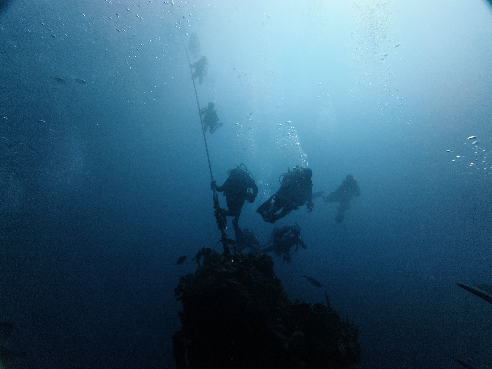
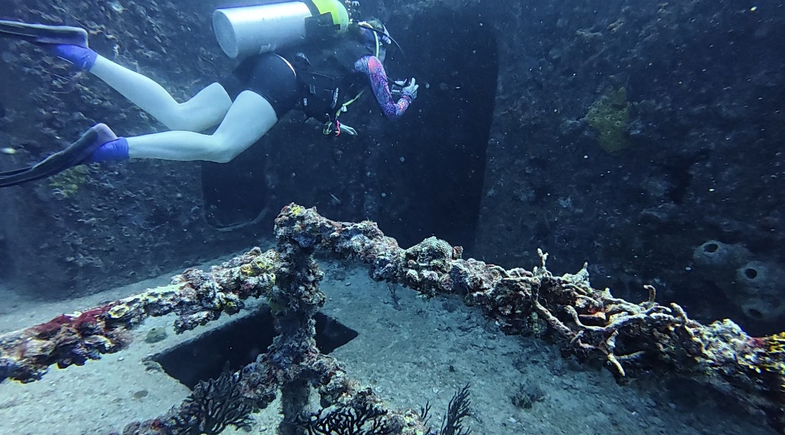
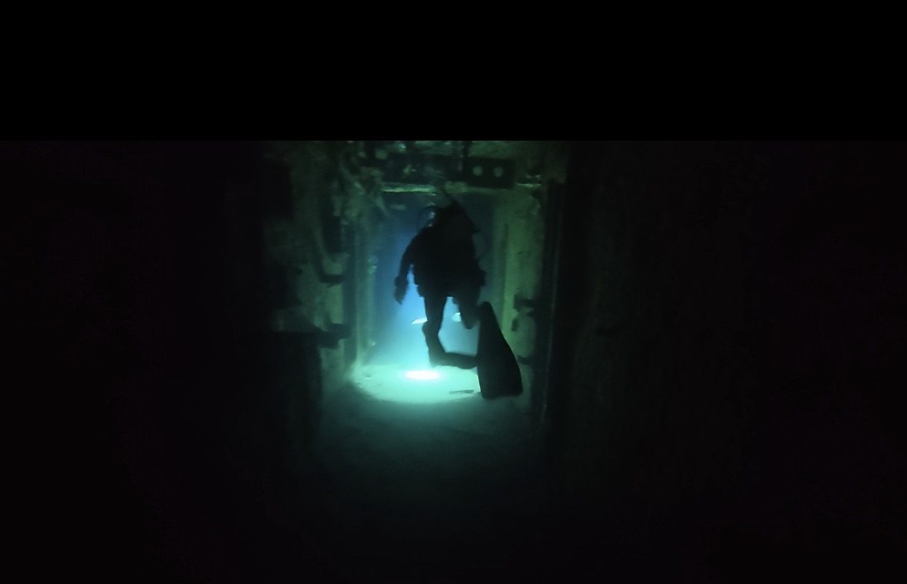
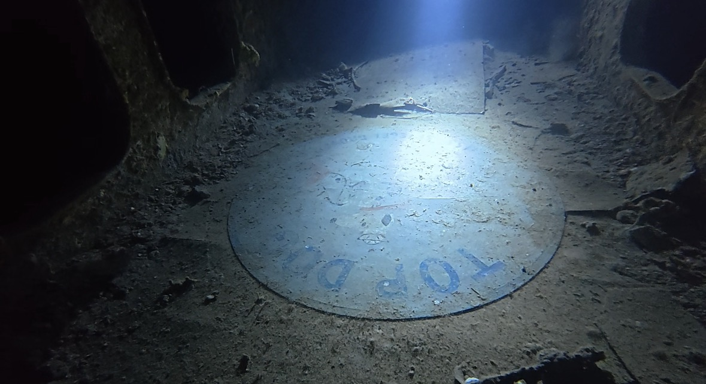
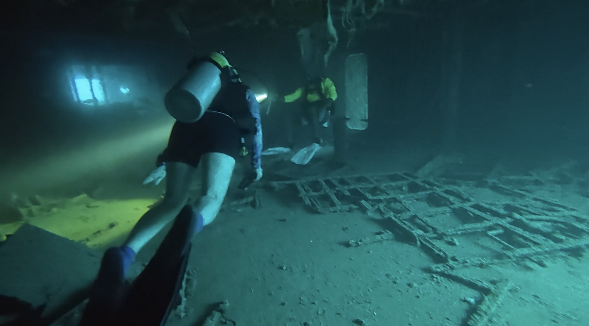

沉船一直是我最感兴趣的潜水专长之一。
第一次在进阶开放水域课程中体验沉船潜水后我就一直对沉船念念不忘。相比于其他的海底生态，我觉得沉船有一种完全不同的魅力。一艘曾经执行过任务的船只，在沉入海底之后慢慢被珊瑚覆盖，成为各种海洋生物的新家园。原本属于人类的建筑，如今成为海洋生态的一部分，这种历史和自然交织在一起的画面让我觉得特别奇妙。
最近又正好在读《Shadow Divers》。书里记录了一群技术潜水员探索一艘未知U-Boat真实身份的经历，也花了很多篇幅描写沉船渗透（penetration）的挑战：氮醉带来的判断力下降、船体内部错综复杂的结构、失去方向感后的心理压力，以及每一次决策都必须建立在冷静与纪律之上。阅读的过程中我逐渐意识到，沉船吸引我的除了历史感，还有探索沉船所需要的技巧，以及面对未知时保持冷静的勇气和能力。
于是在七月初的独立日长周末，我决定solo trip飞去佛罗里达州的 Key Largo学习沉船专长课程（PADI Wreck Specialty），并尝试第一次有限的沉船内部渗透。
第一次进入真正的 overhead environment
沉船专长最核心的内容是学习如何在一个原本不属于人的空间里安全地探索。
绝大多数休闲潜水员接触的都是开放水域，如果遇到紧急情况，头顶并没有障碍物，都可以直接上升到水面。而沉船和洞穴则属于头顶环境（overhead environment），进入之后，头顶不再是水面，而是厚重的钢铁结构或岩壁。一旦发生紧急情况，不能像开放水域那样直接上升，而是必须沿着原来的路线或者根据就近光源找到出口退出。
而与此同时，沉船内部就像一个立体迷宫。走廊、舱室、楼梯四通八达，如果没有接受过专门训练，很容易失去方向感。
沉船潜水对中性浮力也有更高的要求。如果姿势控制不好，不小心扬起沉积的泥沙，能见度可能会在短时间内急剧下降，会给自己以及潜伴团队带来危险。
沉船专长里，我觉得最有趣的部分是学习如何利用导引绳进行渗透导航。看似简单的绳索，需要按照固定的方法完成系结、固定和回收，每一步都有明确的规范。练习水下打结的时候，整个人都处于高度专注的心流状态，恍惚间竟然有种自己是外科医生站在手术台前做手术的感觉。周围的环境都变得不重要，注意力完全落在手里的那根绳子上。
USS Spiegel Grove
我的沉船专长是在Keys的明星沉船潜点USS Spiegel Grove收官完成的。USS Spiegel Grove前身服役于美国海军，原本是一艘登陆舰，在退役后作为人工鱼礁沉入海底。船体全长约 510 英尺（155 米），船体非常庞大，甲板、舰桥、机舱等不同区域都可以进行探索。即使只探索船体外围，通常也需要至少 4 次船潜才能走完大部分区域，而船体内部则更加复杂，像一个巨大的水底迷宫，需要有经验的向导带领，或者接受过沉船渗透训练的潜水员才能进入。
不同于之前的潜水经历，这次探访Spiegel Grove我内心的紧张还是大于期待的。Spiegel Grove经常有强流出现，即使是沿着绳下潜，也经常会有面镜被水流冲掉等突发情况。其次由于它甲板深度已经接近休闲潜水30米的极限，对潜水员的经验和技术都有比较高的要求。我下潜Spiegel Grove的当天能见度并不高，当巨大的船体慢慢从蓝色的海水里显现出来时，会突然意识到自己面对的并不是一艘普通的沉船，而是一艘真正意义上的军舰。

(Photo credit to Sail Fish Scuba)
成功到达预定深度后，进入沉船内部则是此次潜水的高潮。这次渗透由经验丰富的教练带队，而我也已经在之前的训练中完成了牵引绳的打结练习，所以我们决定选择一条更长、更深的路线来探索船体内部。

进入船舱的一瞬间，感觉就像走进了一间黑暗的密室。空间一下子变得狭窄起来，外面的自然光也很快消失，唯一的光源只剩下自己和教练手里的手电筒。原本在开放水域里很熟悉的空间感和方向感，在这里变得不太可靠。我只能跟着教练的路线在这艘巨大的迷宫里前进。

在前往船员餐厅的路上，我们还找到了沉船里著名的 “Snoopy Sign”。看到它的时候还有一点惊喜，感觉自己终于找到了攻略里反复提到的那个“彩蛋”。Top Dog是Spiegel Grove的昵称，它在舰队演习以及人道主义救援任务中表现亮眼，因而被赋予了“Top Dog”称号。

到达餐厅后，潜导会先清点人数，确认所有人都已经到达，没有人在途中掉队。然后我们便沿着出口回到甲板，结束此次沉船渗透。

重游Key Largo
上一次来Keys还是 2017 年的圣诞节。当年精力旺盛，和朋友一起从迈阿密开车去 Key West，当天往返，一路在跨海高速上开了八个小时。九年过去，重新开车走上 Keys 的跨海大桥，最深的感触却是：九年前的自己竟然完全不知道这里拥有这么丰富的海底生态和沉船资源。
之前在 ScubaBoard 上看到过一个让我印象很深的说法：一个人可以有很多兴趣爱好，但很难有哪一种爱好能像潜水一样，把你直接带到一个完全不同的世界。潜水给你的不仅仅是一项有趣的活动，而是一张进入新世界的门票。你可以看到以前从未见过的风景，也可以感受到陆地上完全不同的失重感。
从 Key Largo 回来以后，后劲一直很大。即使回到旧金山的家里，前两天还在因为中暑和脱水不太舒服，脑子里想的却还是沉船和潜水。回头看这趟旅程，我也很庆幸自己这次又一次选择了“少想多做”：先决定去 Key Largo，再解决机票、住宿、装备、潜店这些具体问题。没有因为出发前给自己预设的各种困难，就把这趟旅程停留在想法里。
好想再回大海去潜水呀૮ ˶ᵔ ᵕ ᵔ˶ ა。